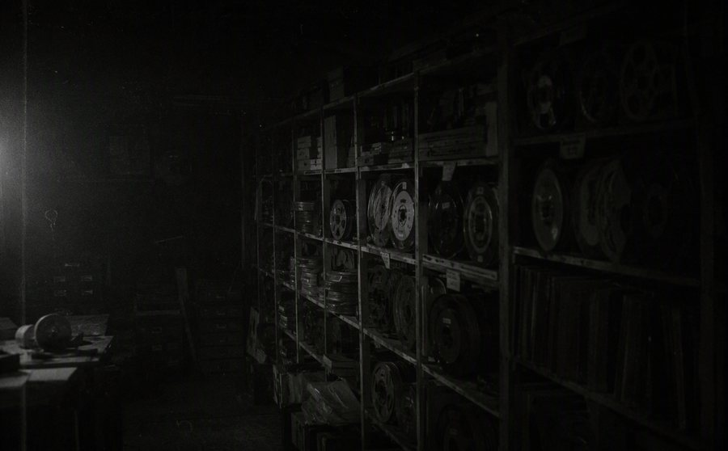

文字稿存档 · 由值班技术员整理

开播首期。夜莺为三位听众放了老歌。其中一位点播的歌，唱片公司说从未发行过。
同一条路况被念了三遍。导播间的回放里只念了一遍。
受访听众说自己十年没睡着过。录音第 3 分 33 秒，背景里有人替他睡着了，呼吸声很重。
夜莺读了一封关于电梯的来信。信的落款地址，三年前就拆掉了。
热线串线了。两位听众通过电话聊了起来，后来才发现他们住同一间屋子，隔了二十年。
全城停电，电台靠备用电源播出。那晚的来电数量，超过了全城的电话总数。
互动环节：对着镜子说三声自己的名字。导播事后接到 13 通报怨电话——镜子里的人多答了一声。
有听众反映：关掉收音机之后，楼道里还能听见本台节目。工程师检查结论：整栋楼没有布线。
夜莺请假，由代班主播播出。第二天夜莺返岗，说自己从未请过假。没有人记得代班者的声音。
本期为重播。但有听众来信说，内容和"上次"不一样——多了一段求救。
整期只有测试音。事后有 41 位听众来电，说在测试音里听见了完整的一期节目。
夜莺读了最后一封关于脚步声的听众来信，并承诺"下期做一期听众来信特辑，全部读完"。
【信号丢失】本期文字稿不存在。母带位置空缺。
若你集齐了十二个字——按顺序，念出来。